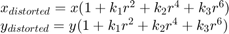

Camera Calibration
This example demonstrates camera calibration in OpenCV. It shows usage of the following functions:
- cv.findChessboardCorners, cv.findCirclesGrid
- cv.cornerSubPix
- cv.drawChessboardCorners
- cv.initCameraMatrix2D
- cv.calibrateCamera
- cv.projectPoints
- cv.getOptimalNewCameraMatrix
- cv.initUndistortRectifyMap, cv.remap
- cv.undistort
- cv.Rodrigues
You can find more test images at these locations:
Cameras have been around for a long-long time. However, with the introduction of the cheap pinhole cameras in the late 20th century, they became a common occurrence in our everyday life. Unfortunately, this cheapness comes with its price: significant distortion. Luckily, these are constants and with a calibration and some remapping we can correct this. Furthermore, with calibration you may also determine the relation between the camera's natural units (pixels) and the real world units (for example millimeters).
In the sample, we will learn:
- about distortions in camera, intrinsic and extrinsic parameters of camera
- how to find these parameters, undistort images, etc.
Sources:
- https://github.com/opencv/opencv/blob/3.2.0/samples/cpp/calibration.cpp
- https://github.com/opencv/opencv/blob/3.2.0/samples/python/calibrate.py
- https://github.com/opencv/opencv/blob/3.2.0/samples/cpp/tutorial_code/calib3d/camera_calibration/camera_calibration.cpp
- https://docs.opencv.org/3.2.0/d4/d94/tutorial_camera_calibration.html
- https://docs.opencv.org/3.2.0/dc/dbb/tutorial_py_calibration.html
Contents
Theory
Two major distortions OpenCV takes into account are radial distortion and tangential distortion. For the radial factor one uses the following formula:

So for an undistorted pixel point at coordinates, its position on the distorted image will be  . The presence of the radial distortion manifests in form of the "barrel" or "fish-eye" effect.
. The presence of the radial distortion manifests in form of the "barrel" or "fish-eye" effect.
Due to radial distortion, straight lines will appear curved. Its effect is more as we move away from the center of image. For example, one image is shown below, where two edges of a chess board are marked with red lines. But you can see that border is not a straight line and doesn't match with the red line. All the expected straight lines are bulged out. See Distortion for more details.

Tangential distortion occurs because the image taking lenses are not perfectly parallel to the imaging plane. So some areas in image may look nearer than expected. It can be represented via the formulas:
So we have five distortion parameters which in OpenCV are presented as one row matrix with 5 columns:
In addition to this, we need to find a few more information, like intrinsic and extrinsic parameters of a camera. Intrinsic parameters are specific to a camera. Extrinsic parameters corresponds to rotation and translation vectors which translates a coordinates of a 3D point to a coordinate system.
Now for the unit conversion we use the following formula:
Here the presence of  is explained by the use of homography coordinate system (and ). The unknown parameters are
is explained by the use of homography coordinate system (and ). The unknown parameters are  and
and  (camera focal lengths) and which are the optical centers expressed in pixels coordinates. If for both axes a common focal length is used with a given
aspect ratio (usually 1), then and in the upper formula we will have a single focal length . The matrix containing these four parameters is referred to as the camera matrix. While the distortion coefficients are the same regardless of the camera resolutions used, these should be scaled along with
the current resolution from the calibrated resolution.
(camera focal lengths) and which are the optical centers expressed in pixels coordinates. If for both axes a common focal length is used with a given
aspect ratio (usually 1), then and in the upper formula we will have a single focal length . The matrix containing these four parameters is referred to as the camera matrix. While the distortion coefficients are the same regardless of the camera resolutions used, these should be scaled along with
the current resolution from the calibrated resolution.
The process of determining these two matrices is the calibration. Calculation of these parameters is done through basic geometrical equations. The equations used depend on the chosen calibrating objects with well defined pattern. Currently OpenCV supports three types of objects for calibration:
- Classical black-white chessboard
- Symmetrical circle pattern
- Asymmetrical circle pattern

Basically, you need to take snapshots of these patterns with your camera and let OpenCV find them. Each found pattern results in a new equation (we know its coordinates in real world space and we know its coordinates found in image). To solve the equation you need at least a predetermined number of pattern snapshots to form a well-posed equation system. This number is higher for the chessboard pattern and less for the circle ones. For example, in theory the chessboard pattern requires at least two snapshots. However, in practice we have a good amount of noise present in our input images, so for good results you will probably need at least 10 good snapshots of the input pattern in different positions.
We do the calibration with the help of the cv.calibrateCamera function. It has the following arguments:
- The object points. This is a cell array of Nx3 points that for each input image describes how should the pattern look. If we have a planar pattern (like a chessboard) then we can simply set all Z coordinates to zero. This is a collection of the points where these important points are present. Because, we use a single pattern for all the input images we can calculate this just once and repeat it for all the other input views. We calculate the corner points with the calcBoardCorners function.
- The image points. This is a cell arrray of Nx2 points which for each input image contains coordinates of the important points (corners for chessboard and centers of the circles for the circle pattern). We have already collected this from cv.findChessboardCorners or cv.findCirclesGrid function. We just need to pass it on.
- The size of the image.
- The camera matrix. If we used the fixed aspect ratio option we need to set .
- The distortion coefficient matrix, initialized with zeros.
- The final argument is the flag. You need to specify here options like fix the aspect ratio for the focal length, assume zero tangential distortion or to fix the principal point.
- For all the views, the function will calculate rotation and translation arrays which transform the object points (given in the model coordinate space) to the image points (given in the world coordinate space). The output cell array of matrices containing in the i-th position the rotation and translation vector for the i-th object point to the i-th image point.
- The function returns the average re-projection error. This number gives a good estimation of precision of the found parameters. This should be as close to zero as possible. Given the intrinsic, distortion, rotation and translation matrices we may calculate the error for one view by using the cv.projectPoints to first transform the object point to image point. Then we calculate the absolute norm between what we got with our transformation and the corner/circle finding algorithm. To find the average error we calculate the arithmetical mean of the errors calculated for all the calibration images.
You may watch a video of the camera calibration on YouTube.
Once calibration is done, we can undistort images and correct them for the lens distortion. For example, you can see in the result below that all the edges become straight.


Code
function varargout = calibration_demo()Options and calibration flags (keep in mind that the number of images needed grows dramatically with the number of parameters we are solving for, i.e distortion coeffs)
opts = struct();
opts.aspectRatio = 1; % aspect ratio (ar = fx/fy)
opts.flags.UseIntrinsicGuess = false; % how to initize camera matrix
opts.flags.FixAspectRatio = true; % fix aspect ratio (ar = fx/fy)
opts.flags.FixFocalLength = false; % fix fx and fy
opts.flags.FixPrincipalPoint = false; % fix principal point at the center
opts.flags.ZeroTangentDist = false; % assume zero tangential distortion
opts.flags.RationalModel = false; % enable (k4,k5,k6)
opts.flags.ThinPrismModel = false; % enable (s1,s2,s3,s4)
opts.flags.TiltedModel = false; % enable (taux,tauy)
%opts.flags.FixK3 = true;
%opts.flags.FixK4 = true;
%opts.flags.FixK5 = true;list of board images
opts.pattern = 'chessboard'; % type of pattern grid: chessboard, acircles, circles opts.boardSize = [9 6]; % number of inner corners per board dimensions opts.squareSize = 30.0; % board square size in millimeters files = cv.glob(fullfile(mexopencv.root(), 'test', 'left*.jpg')); finfo = imfinfo(files{1}); opts.imageSize = [finfo.Width, finfo.Height]; display(opts); display(files(:));
opts =
struct with fields:
aspectRatio: 1
flags: [1×1 struct]
pattern: 'chessboard'
boardSize: [9 6]
squareSize: 30
imageSize: [640 480]
13×1 cell array
'C:\Users\Amro\Desktop\mexopencv\test\left01.jpg'
'C:\Users\Amro\Desktop\mexopencv\test\left02.jpg'
'C:\Users\Amro\Desktop\mexopencv\test\left03.jpg'
'C:\Users\Amro\Desktop\mexopencv\test\left04.jpg'
'C:\Users\Amro\Desktop\mexopencv\test\left05.jpg'
'C:\Users\Amro\Desktop\mexopencv\test\left06.jpg'
'C:\Users\Amro\Desktop\mexopencv\test\left07.jpg'
'C:\Users\Amro\Desktop\mexopencv\test\left08.jpg'
'C:\Users\Amro\Desktop\mexopencv\test\left09.jpg'
'C:\Users\Amro\Desktop\mexopencv\test\left11.jpg'
'C:\Users\Amro\Desktop\mexopencv\test\left12.jpg'
'C:\Users\Amro\Desktop\mexopencv\test\left13.jpg'
'C:\Users\Amro\Desktop\mexopencv\test\left14.jpg'
load images
N = numel(files);
imgs = cell(N,1);
for i=1:N
imgs{i} = cv.imread(files{i}, 'Color',true);
enddetect image points, and filter out views where detection failed
[imagePoints, found] = detectImageCorners(imgs, opts);
if ~all(found)
files = files(found);
imgs = imgs(found);
imagePoints = imagePoints(found);
found = found(found);
N = nnz(found);
assert(N >= 2, 'Not enough views');
endshow detected corners
for i=1:N img = cv.drawChessboardCorners(imgs{i}, opts.boardSize, ... imagePoints{i}, 'PatternWasFound',found(i)); imshow(img), title(sprintf('Detection, %d/%d', i, N)) pause(1) end
create object points (we assume a fully visible calibration pattern, the same shown in each view)
objectPoints = calcBoardCorners(opts);
objectPoints = repmat({objectPoints}, N, 1);run calibration
[calib, ok] = runCalibration(objectPoints, imagePoints, opts);
if ~ok
disp('calibration failed');
return;
end
fprintf('avg reprojection error = %f\n', calib.rms)
%
% save intrinsic/extrinsic parameters
fname = fullfile(tempdir(), sprintf('calibration_%s.yml', opts.pattern));
saveCameraParams(fname, calib, opts); % ..., true, imagePoints
fprintf('Saved to: %s\n', fname);avg reprojection error = 0.392591 Saved to: C:\Users\Amro\AppData\Local\Temp\calibration_chessboard.yml
display parameter estimation errors
displayErrorEstimates(calib);
Standard Errors of Estimated Camera Parameters ---------------------------------------------- Intrinsics ---------- Focal length (pixels): [ 535.9158 +/- 0.0000 535.9158 +/- 1.2919 ] Principal Point (pixels): [ 342.2831 +/- 1.3643 235.5708 +/- 1.4770 ] Radial distortion: [ -0.2664 +/- 0.0163 -0.0386 +/- 0.1271 0.2384 +/- 0.2763 ] Tangential distortion: [ 0.0018 +/- 0.0003 -0.0003 +/- 0.0004 ] Rational distortion: [ 0.0000 +/- 0.0000 0.0000 +/- 0.0000 0.0000 +/- 0.0000 ] Thin Prism distortion: [ 0.0000 +/- 0.0000 0.0000 +/- 0.0000 0.0000 +/- 0.0000 0.0000 +/- 0.0000 ] Tilt distortion: [ 0.0000 +/- 0.0000 0.0000 +/- 0.0000 ] Extrinsics ---------- Rotation vectors: [ 0.1687 +/- 0.0045 0.2757 +/- 0.0037 0.0135 +/- 0.0007 ] [ 0.4133 +/- 0.0030 0.6499 +/- 0.0030 -1.3372 +/- 0.0011 ] [ -0.2770 +/- 0.0032 0.1869 +/- 0.0029 0.3549 +/- 0.0006 ] [ -0.1109 +/- 0.0035 0.2397 +/- 0.0031 -0.0021 +/- 0.0006 ] [ -0.2919 +/- 0.0032 0.4284 +/- 0.0031 1.3127 +/- 0.0008 ] [ 0.4078 +/- 0.0045 0.3037 +/- 0.0048 1.6491 +/- 0.0010 ] [ 0.1793 +/- 0.0043 0.3456 +/- 0.0042 1.8685 +/- 0.0011 ] [ -0.0910 +/- 0.0034 0.4798 +/- 0.0036 1.7534 +/- 0.0009 ] [ 0.2030 +/- 0.0033 -0.4239 +/- 0.0029 0.1324 +/- 0.0008 ] [ -0.4191 +/- 0.0031 -0.4997 +/- 0.0031 1.3356 +/- 0.0011 ] [ -0.2385 +/- 0.0033 0.3479 +/- 0.0034 1.5308 +/- 0.0008 ] [ 0.4640 +/- 0.0034 -0.2835 +/- 0.0032 1.2386 +/- 0.0009 ] [ -0.1700 +/- 0.0032 -0.4712 +/- 0.0033 1.3460 +/- 0.0009 ] Translation vectors (world units): [ -90.2615 +/- 1.2416 -130.7513 +/- 1.3360 479.6425 +/- 1.2225 ] [ -70.2860 +/- 1.0905 99.5110 +/- 1.1628 424.5722 +/- 0.8268 ] [ -47.8158 +/- 0.9803 -120.4993 +/- 1.0490 381.7914 +/- 0.9091 ] [ -118.0928 +/- 1.0151 -80.7960 +/- 1.1010 397.0229 +/- 0.9889 ] [ 70.1913 +/- 0.9831 -138.3804 +/- 1.0571 380.6232 +/- 0.8789 ] [ 200.7249 +/- 1.1203 -78.6852 +/- 1.1897 403.7536 +/- 1.2704 ] [ 23.4401 +/- 1.2035 -86.1863 +/- 1.2831 467.3153 +/- 1.2198 ] [ 94.8605 +/- 0.9806 -105.5304 +/- 1.0515 379.9929 +/- 0.9313 ] [ -79.6155 +/- 0.8793 -97.2232 +/- 0.9395 333.9627 +/- 0.9948 ] [ 56.2833 +/- 1.0458 -133.2075 +/- 1.1206 405.6676 +/- 0.9723 ] [ 60.9174 +/- 0.9959 -123.1165 +/- 1.0639 386.6416 +/- 0.9060 ] [ 40.4392 +/- 0.9075 -109.9407 +/- 0.9918 349.7354 +/- 1.0263 ] [ 54.0186 +/- 0.9671 -129.8143 +/- 1.0406 374.9252 +/- 0.9582 ]
reprojection errors
[calib.rms, calib.rmsPerView, reprojErrs] = computeReprojectionErrors(...
objectPoints, imagePoints, calib);
figure, visualizeReprojErrors(calib.rms, calib.rmsPerView, reprojErrs);visualize board locations (poses in camera centric view)
figure, visualizeExtrinsics(calib, opts);
visualize distortion model
figure, visualizeDistortion(calib, opts);
correct images for lens distortion, and show them
[undistortImage, roi] = buildUndistortFunction(calib, opts);
figure
for i=1:N
img = undistortImage(imgs{i});
if false
img = cv.Rect.crop(img, roi);
end
imshow(img), title(sprintf('Undistortion, %d/%d', i, N))
pause(1)
endoutput arguments
if nargout > 0, varargout{1} = calib; end if nargout > 1, varargout{2} = opts; end
endfunction [imagePoints, founds] = detectImageCorners(imgs, opts) if true blobOpts = {}; else % customize blob detector used in findCirclesGrid blobOpts = {'BlobDetector',{'SimpleBlobDetector', 'MaxArea',1e4}}; end N = numel(imgs); imagePoints = cell(N,1); founds = false(N,1); for i=1:N switch opts.pattern case 'chessboard' [pts,found] = cv.findChessboardCorners(... imgs{i}, opts.boardSize, 'FastCheck',true); if found % improve the found corners coordinate accuracy gray = cv.cvtColor(imgs{i}, 'RGB2GRAY'); pts = cv.cornerSubPix(gray, pts, 'WinSize',[11 11], ... 'Criteria',struct('type','Count+EPS', ... 'maxCount',30, 'epsilon',0.1)); end case 'circles' [pts,found] = cv.findCirclesGrid(imgs{i}, opts.boardSize, ... 'SymmetricGrid',true, blobOpts{:}); case 'acircles' [pts,found] = cv.findCirclesGrid(imgs{i}, opts.boardSize, ... 'SymmetricGrid',false, blobOpts{:}); otherwise pts = {}; found = false; end imagePoints{i} = cat(1, pts{:}); founds(i) = found; end end function corners = calcBoardCorners(opts) % planar calibration pattern (in model coordinate system) [X,Y] = ndgrid(1:opts.boardSize(1), 1:opts.boardSize(2)); switch opts.pattern case {'chessboard', 'circles'} corners = [X(:), Y(:)]; case 'acircles' corners = [2*X(:) + mod(Y(:),2), Y(:)]; otherwise corners = zeros(0,2); end corners = (corners - 1) * opts.squareSize; corners(:,3) = 0; % Z = 0 end function [calib, ok] = runCalibration(objectPoints, imagePoints, opts) % calibration flags calib = struct(); if opts.flags.UseIntrinsicGuess if opts.flags.FixAspectRatio params = {'AspectRatio',opts.aspectRatio}; else params = {'AspectRatio',0}; end calib.M = cv.initCameraMatrix2D(objectPoints, imagePoints, ... opts.imageSize, params{:}); else calib.M = eye(3); if opts.flags.FixAspectRatio calib.M(1,1) = opts.aspectRatio; end end if opts.flags.TiltedModel calib.D = zeros(1,14); elseif opts.flags.ThinPrismModel calib.D = zeros(1,12); elseif opts.flags.RationalModel calib.D = zeros(1,8); else calib.D = zeros(1,5); end params = st2kv(opts.flags); params = [params, 'CameraMatrix',calib.M, 'DistCoeffs',calib.D, ... 'UseIntrinsicGuess',opts.flags.UseIntrinsicGuess]; % calibration: find intrinsic and extrinsic camera parameters if false % we will later manually compute reprojection errors [calib.M, calib.D, calib.rms, calib.R, calib.T] = cv.calibrateCamera(... objectPoints, imagePoints, opts.imageSize, params{:}); % placeholder for standard deviations of estimates calib.sdInt = nan(1, 18); calib.sdExt = nan(1, 6*numel(calib.R)); else % returns reprojection errors (same as computeReprojectionErrors) [calib.M, calib.D, calib.rms, calib.R, calib.T, ... calib.sdInt, calib.sdExt, calib.rmsPerView] = cv.calibrateCamera(... objectPoints, imagePoints, opts.imageSize, params{:}); end ok = all(isfinite([calib.M(:); calib.D(:)])); end function saveCameraParams(filename, calib, opts, writeExtrinsics, imagePoints) if nargin < 4, writeExtrinsics = false; end fs = struct(); fs.calibration_time = datestr(now()); if writeExtrinsics fs.nframes = int32(numel(calib.R)); end fs.image_width = int32(opts.imageSize(1)); fs.image_height = int32(opts.imageSize(2)); fs.board_width = int32(opts.boardSize(1)); fs.board_height = int32(opts.boardSize(2)); fs.square_size = opts.squareSize; if opts.flags.FixAspectRatio fs.aspectRatio = opts.aspectRatio; end fs.flags = opts.flags; fs.camera_matrix = calib.M; fs.distortion_coefficients = calib.D; if writeExtrinsics % set of 6-tuples (rotation vector + translation vector) for each view RT = cellfun(@(r,t) [r(:); t(:)]', calib.R, calib.T, ... 'UniformOutput',false); RT = cat(1, RT{:}); fs.extrinsic_parameters = RT; end if nargin > 4 fs.image_points = imagePoints; end cv.FileStorage(filename, fs); end function kv = st2kv(st) % convert struct to cell-array of key/value params k = fieldnames(st); v = struct2cell(st); kv = [k(:) v(:)]'; kv = kv(:)'; end function displayErrorEstimates(calib) D = calib.D; if numel(D) < 14, D(14) = 0; end sdInt = calib.sdInt; if numel(sdInt) < 18, sdInt(18) = NaN; end sdExt = reshape(calib.sdExt, 3, 2, []); % 1/2/3, R/T, N fmt = ' %9.4f +/- %-9.4f '; fprintf('\n'); fprintf('\t\t\tStandard Errors of Estimated Camera Parameters\n'); fprintf('\t\t\t----------------------------------------------\n'); fprintf('\n'); fprintf('Intrinsics\n'); fprintf('----------\n'); fprintf('Focal length (pixels): ['); fprintf(fmt, calib.M(1,1), sdInt(1), calib.M(2,2), sdInt(2)); fprintf(']\n'); fprintf('Principal Point (pixels): ['); fprintf(fmt, calib.M(1,3), sdInt(3), calib.M(2,3), sdInt(4)); fprintf(']\n'); fprintf('Radial distortion: ['); fprintf(fmt, D(1), sdInt(5), D(2), sdInt(6), D(5), sdInt(9)); fprintf(']\n'); fprintf('Tangential distortion: ['); fprintf(fmt, D(3), sdInt(7), D(4), sdInt(8)); fprintf(']\n'); fprintf('Rational distortion: ['); fprintf(fmt, D(6), sdInt(10), D(7), sdInt(11), D(8), sdInt(12)); fprintf(']\n'); fprintf('Thin Prism distortion: ['); fprintf(fmt, D(9), sdInt(13), D(10), sdInt(14), D(11), sdInt(15), ... D(12), sdInt(16)); fprintf(']\n'); fprintf('Tilt distortion: ['); fprintf(fmt, D(13), sdInt(17), D(14), sdInt(18)); fprintf(']\n'); fprintf('\n'); fprintf('Extrinsics\n'); fprintf('----------\n'); fprintf('Rotation vectors:\n'); for i=1:numel(calib.R) fprintf('\t['); fprintf(fmt, calib.R{i}(1), sdExt(1,1,i), ... calib.R{i}(2), sdExt(2,1,i), calib.R{i}(3), sdExt(3,1,i)); fprintf(']\n'); end fprintf('Translation vectors (world units):\n'); for i=1:numel(calib.T) fprintf('\t['); fprintf(fmt, calib.T{i}(1), sdExt(1,2,i), ... calib.T{i}(2), sdExt(2,2,i), calib.T{i}(3), sdExt(3,2,i)); fprintf(']\n'); end end function [rmseAvg, rmsePerView, err] = computeReprojectionErrors(objectPoints, imagePoints, calib) % 3D points projection using camera calibration params N = numel(objectPoints); imagePoints2 = cell(N,1); for i=1:N imagePoints2{i} = cv.projectPoints(objectPoints{i}, ... calib.R{i}, calib.T{i}, calib.M, 'DistCoeffs',calib.D); end % compute difference (reprojection errors) err = cellfun(@minus, imagePoints, imagePoints2, 'UniformOutput',false); % total RMSE from all points, and RMSE per view % (same as calib.rms and calib.rmsPerView computed by calibrateCamera) if true fcnRMSE = @(e) sqrt(mean(sum(e.^2, 2))); rmseAvg = fcnRMSE(cat(1, err{:})); rmsePerView = cellfun(fcnRMSE, err); else e = cellfun(@(e) norm(e(:)), err).^2; n = cellfun(@(e) size(e,1), err); rmseAvg = sqrt(sum(e) / sum(n)); rmsePerView = sqrt(e ./ n); end end function [fcn, roi] = buildUndistortFunction(calib, opts) % when the scaling parameter Alpha=0, it returns undistorted image % with minimum unwanted pixels. So it may even remove some pixels at % image corners. % When Alpha=1, all pixels are retained with some extra black images. % It also returns an image ROI which can be used to crop the result. [newM, roi] = cv.getOptimalNewCameraMatrix(calib.M, calib.D, ... opts.imageSize, 'Alpha',1); if true [map1, map2] = cv.initUndistortRectifyMap(calib.M, calib.D, ... opts.imageSize, 'NewCameraMatrix',newM); fcn = @(img) cv.remap(img, map1, map2, 'Interpolation','Linear'); elseif true fcn = @(img) cv.undistort(img, calib.M, calib.D, 'NewCameraMatrix',newM); else fcn = @(img) cv.undistort(img, calib.M, calib.D, 'NewCameraMatrix',calib.M); roi = [0 0 opts.imageSize]; end end function visualizeReprojErrors(totalAvgErr, perViewErrors, reprojErrs) N = numel(reprojErrs); % visualize reprojection errors re = cat(2, reprojErrs{:}); plot(re(:,1:2:end), re(:,2:2:end), '+') legend(num2str((1:N)', 'image %d')), grid on xlabel('X'), ylabel('Y') title(sprintf('Reprojection Error (in pixel), RMSE = %f', totalAvgErr)) % visualize RMSE figure, bar(1:N, perViewErrors) hLin = line(xlim(), [1 1]*totalAvgErr, 'LineStyle','--', 'Color','r'); legend(hLin, 'Overall Mean error') xlabel('Images'), ylabel('Mean Error (in pixels)') title('Mean Reprojection Error per Image') end function visualizeExtrinsics(calib, opts) N = numel(calib.R); clr = lines(N); w = (opts.boardSize(1) - 1) * opts.squareSize; h = (opts.boardSize(2) - 1) * opts.squareSize; s = max(w,h); % scale in terms of width/height % board corner points (in model coordinate system, i.e objectPoints) XYZ = [0 0 0; w 0 0; w h 0; 0 h 0; 0 0 0]'; % axis vector points at origin of world coordinates (camera frame) ax = [0 0 0; 1 0 0; 0 0 0; 0 1 0; 0 0 0; 0 0 1]' * (0.6*s); % plot axis vectors at the origin plot3(ax(1,:), ax(2,:), ax(3,:), 'k', 'LineWidth',2) hold on text(0.8*s, 0, 0, 'X_c') text(0, 0.8*s, 0, 'Y_c') text(0, 0, 0.8*s, 'Z_c') % for each board for i=1:N % transformation from model coordinates to real world coordinates R = cv.Rodrigues(calib.R{i}); T = calib.T{i}; xyz = bsxfun(@plus, R * XYZ, T); % plot board and label it patch(xyz(1,:), xyz(2,:), xyz(3,:), clr(i,:), 'LineWidth',1, ... 'FaceColor',clr(i,:), 'EdgeColor',clr(i,:), 'FaceAlpha',0.2); text(T(1), T(2), T(3), num2str(i), 'FontSize',12, 'Color',clr(i,:)); end hold off, axis equal, grid on, box on title('Extrinsic Parameters Visualization') xlabel('X'), ylabel('Y'), zlabel('Z') % world units (mm) if ~mexopencv.isOctave() cameratoolbar cameratoolbar('SetCoordSys','y') else %HACK: CAM* functions not implemented in Octave rotate3d on end end function visualizeDistortion(calib, opts) % cameraMatrix = [fx 0 cx; 0 fy cy; 0 0 1] % % * focal lengths : fx, fy % * aspect ratio : a = fy/fx % * principal point : cx, cy % M = calib.M; % distCoeffs = [k1,k2,p1,p2,k3,k4,k5,k6,s1,s2,s3,s4,taux,tauy] % % * radial distortion : k1, k2, k3 % * tangential distortion : p1, p2 % * rational distortion : k4, k5, k6 % * thin prism distortion : s1, s2, s3, s4 % * tilted distortion : taux, tauy (ignored here) % D = calib.D; if numel(D) < 14, D(14) = 0; end % https://docs.opencv.org/3.2.0/d9/d0c/group__calib3d.html#details nstep = 20; [u,v] = meshgrid(linspace(0,opts.imageSize(1)-1,nstep), ... linspace(0,opts.imageSize(2)-1,nstep)); xyz = M \ [u(:) v(:) ones(numel(u),1)].'; xp = xyz(1,:) ./ xyz(3,:); yp = xyz(2,:) ./ xyz(3,:); r2 = xp.^2 + yp.^2; r4 = r2.^2; r6 = r2.^3; coef = (1 + D(1)*r2 + D(2)*r4 + D(5)*r6) ./ (1 + D(6)*r2 + D(7)*r4 + D(8)*r6); xpp = xp.*coef + 2*D(3)*(xp.*yp) + D(4)*(r2 + 2*xp.^2) + D(9)*r2 + D(10)*r4; ypp = yp.*coef + D(3)*(r2 + 2*yp.^2) + 2*D(4)*(xp.*yp) + D(11)*r2 + D(12)*r4; u2 = M(1,1)*xpp + M(1,3); v2 = M(2,2)*ypp + M(2,3); du = u2(:) - u(:); dv = v2(:) - v(:); dr = reshape(hypot(du,dv), size(u)); % plot quiver(u(:)+1, v(:)+1, du, dv) hold on plot(opts.imageSize(1)/2, opts.imageSize(2)/2, 'x', M(1,3), M(2,3), 'o') [C, hC] = contour(u(1,:)+1, v(:,1)+1, dr, 'k'); clabel(C, hC) hold off, axis ij equal tight title('Distortion Model'), xlabel('u'), ylabel('v') end